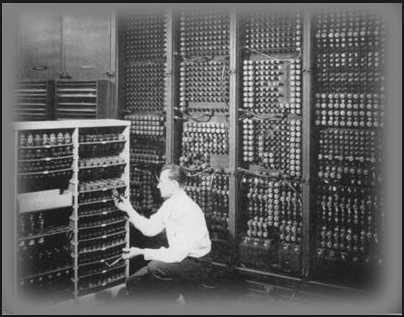
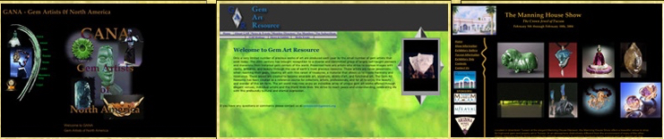

Hello, I’m Epaul
I am currently residing in Juneau, Alaska
I am currently residing in Juneau, Alaska
The first flame of my lifelong love of computers was fanned to life at 13 years old, when I repaired a NORAD computer that occupied several stories underground. In those days when a vacuum tube burned out an indicator light would activate, informing the technicians which bank of tubes to replace. Each bank was the size of a large suitcase. I leapt at the chance to remove and replace a bank of tubes, thereby doing my part to keep the world safe for democracy.
A few years later while still in High School I wrote and ran the first Marketing Analysis program for a Fortune 500 company.
In the later years of the last millennium I travelled around the country as an artist and entertainer. I worked extensively in the graphic arts, from sign writer to patent illustrator to cartographer, balancing between computer graphics and ink & paint. I worked for several years as a planetarian at the Arizona Science Center, giving shows and creating artwork on 72 dpi screens that were intended for display on a 40 foot diameter dome.
During that time is when I became fascinated with the art and science of creating web pages. In addition to sites for friends and family, many of whom ran small businesses, I also began creating magnificent works to showcase the talents and artworks of artists, museums, and art shows around the country.